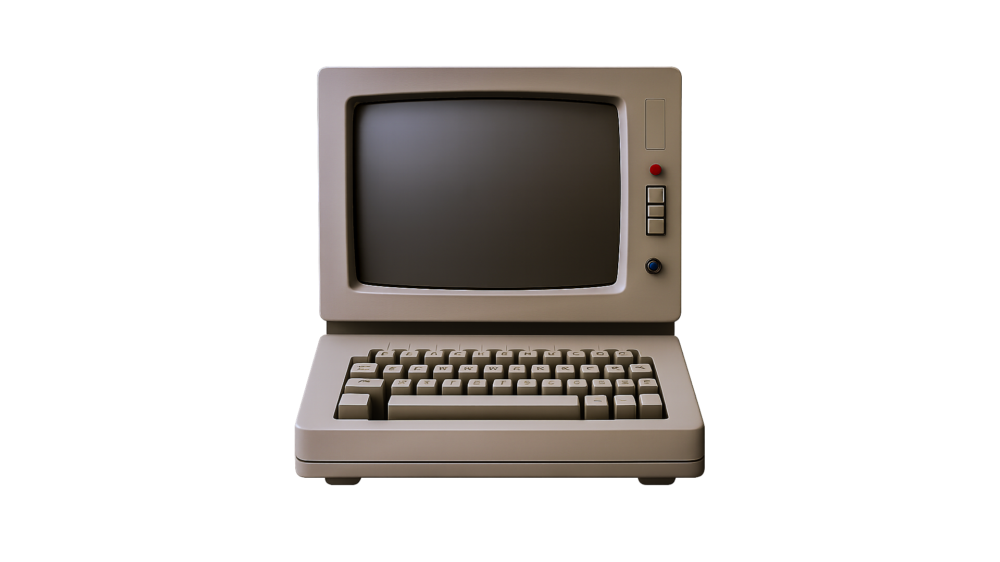
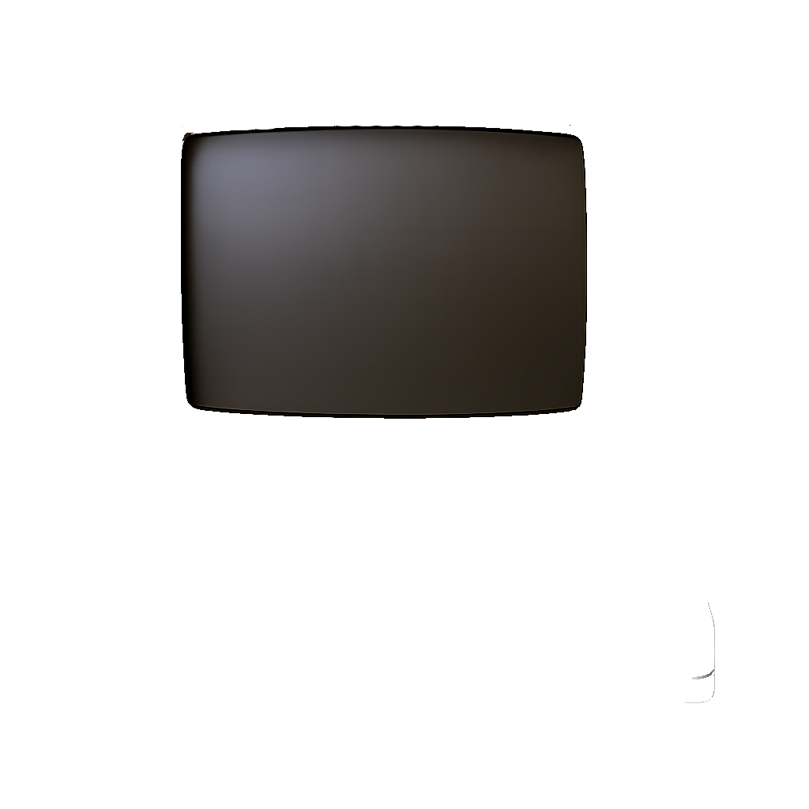

Neo:
“Follow the white rabbit.”
My digital realm – Blog, Training & Projects
⚠️ This site is still under construction


This past development phase has been all about building my own Matrix-inspired website from scratch. I planned, designed, and coded each section manually – from the terminal-styled intro to the glowing text effects and interactive components.
I created custom audio systems, implemented animated background effects, and modularized the CSS and JavaScript for better maintainability. The monitor-style boot sequence was one of the most challenging yet rewarding features to bring to life.
As of now, the full layout has been optimized for all major screen sizes – including smartphones and tablets – thanks to targeted media queries and scalable styling.
The next milestones will be focused on expanding the portfolio section, integrating more interactive content, and polishing accessibility features for a wider user base.
My journey into web design began with a fascination for interactive digital environments. This portfolio is the result of hands-on learning and a growing passion for front-end development.
On May 17th, 2025, I officially started building this Matrix-inspired website as part of my personal training in front-end development. With no prior experience in advanced web design, I challenged myself to conceptualize, plan, and code the entire project from scratch.
In the early days, I focused heavily on mastering the basics: structuring HTML properly, learning how CSS controls layout and style, and understanding how JavaScript adds interactivity and logic to a site. It was a lot to take in, but each section I created taught me something new.
I quickly moved on to more complex topics, such as responsive design principles, flexbox/grid layouts, and modular code organization. One of the biggest milestones was implementing the animated Matrix background using the HTML5 canvas and dynamically controlling the site’s sound system.
The “monitor boot sequence” was another highlight. It required combining layered images, animations, sounds, and asynchronous typed text effects to simulate a terminal experience. Debugging it and making it responsive across different devices was both frustrating and extremely rewarding.
Over time, I introduced reusable CSS components, improved semantic structure, and optimized accessibility. The project became more than a practice site—it evolved into a real portfolio and a reflection of my identity as a creator.
As I continue to refine this platform, I’m proud of how far I’ve come since May. Each improvement, no matter how small, adds to my growing skill set. This site will remain a live project and learning playground as I dive deeper into animation, validation logic, and eventually even back-end integration.
Thank you for your entry! Please note: This guestbook is still under construction and entries are not saved yet.
Thank you for your message!